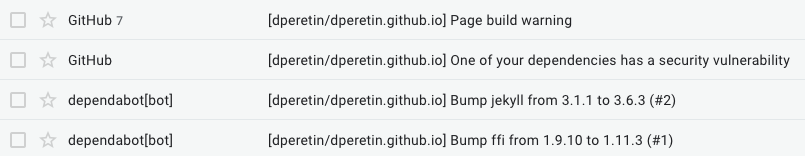

Nobody Reads Shit
Watched an H3 podcast episode yesterday and they were commenting on how YouTube is announcing policy changes on a blog instead of via video. Comments were premised by the fact that YouTube is a video company, but the question of who reads blogs (or anything for that matter) was raised. This reminded me that I have a blog of my own. Blog that I didn’t look at for more than 5 years.
The State of It
Blog was still up. Domain dejanperetin.com was being auto renewed every year on Route53. Blog was hosted on GitHub Pages and they did a great job of not making any backward incompatible changes.
Unsurprisingly, nobody is reading it.
What Changed?
Page was generated with Pelican, with all of the generated html, css and js committed in the repo. This made it difficult to read so I just scrapped it and migrated to Jekyll. GitHub Pages will now build your page, if you use one of the supported themes (I just picked the simplest one). This means the repo can contain only the config files and blog posts, the actual page is generated by GitHub Pages.
Various security checks are done on dependencies and build warnings are delivered via email.

Blog can be configured in the repo settings page. Domain can be set there and themes can be changed. Any change made there will be committed to the code base, which is a nice touch.
HTTPS can be enforced. Enabling this will generate a certificate for your custom domain with Let’s Encrypt.
Initially I was thinking of moving the blog to S3, but given all of the above, plus the hassle of keeping the URLs the same on S3, I stayed with GitHub Pages.
One thing I found lacking on GitHub Pages is the visibility into availability and performance of the blog. For that I setup a CloudWatch Synthetics canary.
Canary detected the moment when I nuked the repo and re-created it with Jekyll: